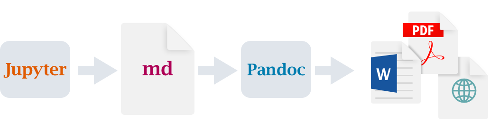

Goal: Single Source Publishing

Simple Example
---
title: "matplotlib demo"
format:
html:
code-fold: true
jupyter: python3
---
For a demonstration of a line plot on a polar
axis, see @fig-polar.```{python}
#| label: fig-polar
#| fig-cap: "A line plot on a polar axis"
import numpy as np
import matplotlib.pyplot as plt
r = np.arange(0, 2, 0.01)
theta = 2 * np.pi * r
fig, ax = plt.subplots(
subplot_kw = {'projection': 'polar'}
)
ax.plot(theta, r)
ax.set_rticks([0.5, 1, 1.5, 2])
ax.grid(True)
plt.show()
```
But Quarto doesn’t have to be plain-text

Rendering pipeline
Plain text workflow (.qmd uses Jupyter kernel to execute cells):

Notebook workflow (defaults to using existing stored computation):

Comfort of your own workspace


Auto-completion in RStudio + VSCode
Both RStudio and VSCode with the Quarto extension have rich auto-completion
YAML
Chunk option

Quarto, unified syntax across markdown and code
Add two images on disk to a two column layout.

Generate two plots from code, and layout in two columns.
```{python}
#| layout-ncol: 2
#| fig-cap: ["Scatter", "Boxplot"]
from plotnine import ggplot, geom_point, geom_boxplot, aes, stat_smooth, facet_wrap, theme
from plotnine.data import mtcars
# plot 1 in column 1
plot1 = (ggplot(mtcars, aes('wt', 'mpg', color='factor(gear)'))
+ geom_point() + stat_smooth(method='lm')
+ facet_wrap('~gear')).draw(show=True)
# plot 2 in column 2
plot2 = (ggplot(mtcars, aes('cyl', 'mpg', color='factor(cyl)'))
+ geom_boxplot()
).draw(show=True)
```

Extending Quarto with extensions

Quarto
- Batteries included, shared syntax across output types and languages
- Single source publishing across document types, with raw customization allowed
- Choose your own editor for plain text .qmd or Jupyter notebooks
- Quarto projects + freeze for managing stored computation
Follow @quarto_pub #QuartoPub or me @thomas_mock on Twitter/Fosstodon.org to stay up to date!
Web resources
- Quarto.org for documentation or the Quarto FAQ
- Get Started with Quarto + Python

Why the name “Quarto”?1